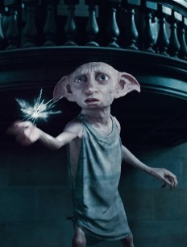

又去看了一边《哈利波特与死亡圣器》，多比－－这个伟大可爱善良充满正义感的小精灵。让我在刚刚回家的路上仍然眼泪不止，不知道为什么每次看到电影里的人类死去的时候都不会太难过，更不会哭。而每当看到马儿被箭射中了，狗走丢了，兔子被抓起两只耳朵。。。类似的剧情都会立刻眼眶湿润，就连多比这样的小精灵，明明知道是假的。但当看到他为了救哈利波特自己被魔棒射中死去的时候，我就会瞬间眼泪狂飙，看到多比流了那么多血，我真的觉得他会很痛很痛，真得觉得他舍不得哈利波特这个好朋友。当多比在被埋藏得时候，我想到了我最爱的两只狗栋栋和胖胖，想到他们总有一天会。。。啊，不敢想！
好喜欢多比
